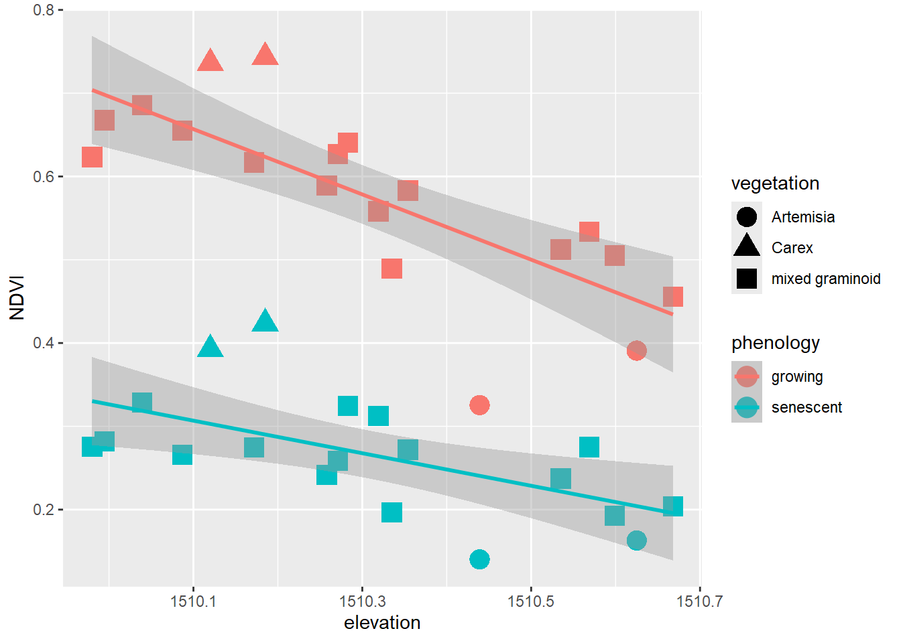
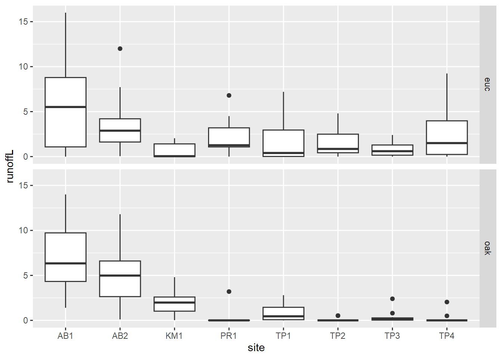
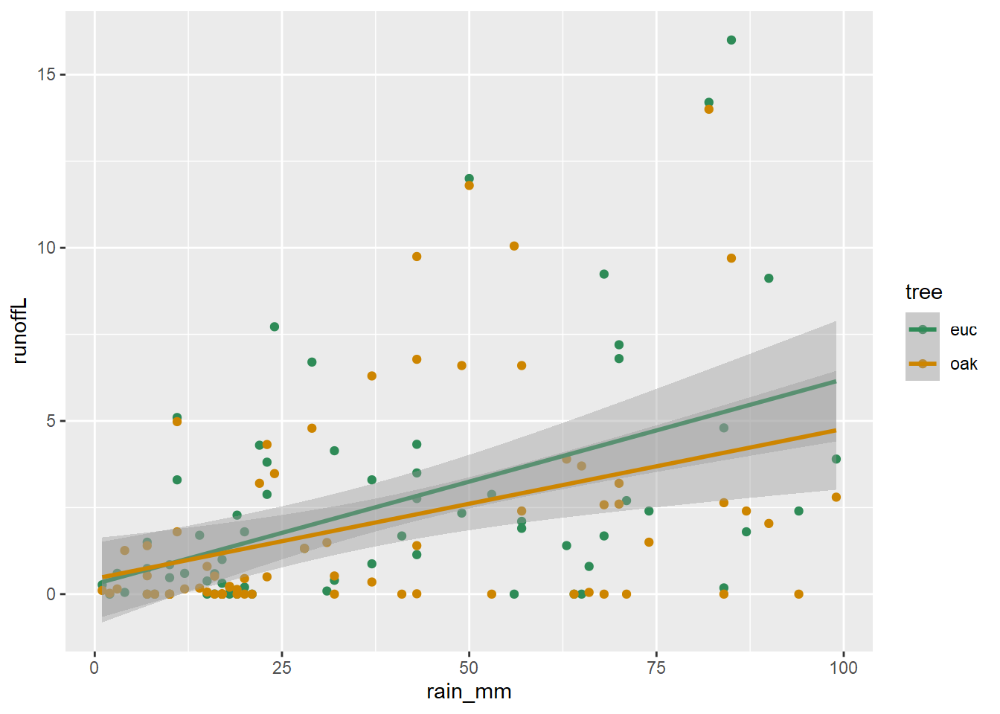
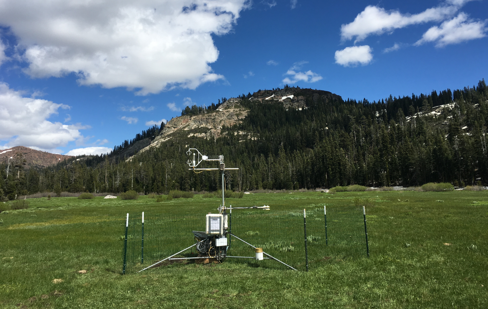
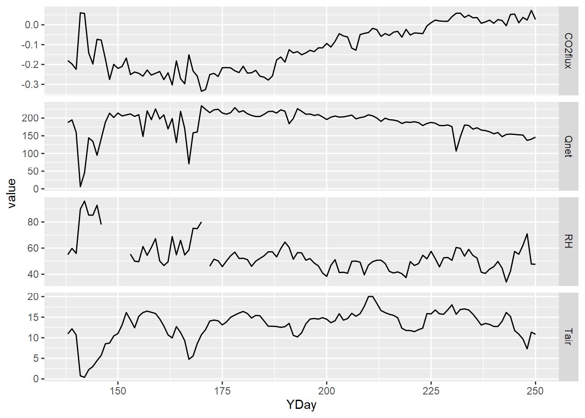
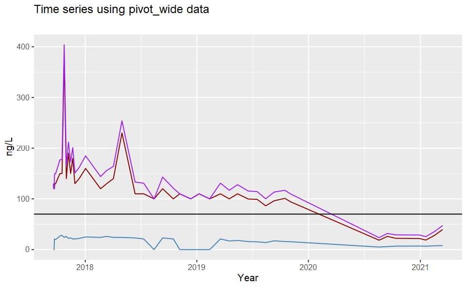
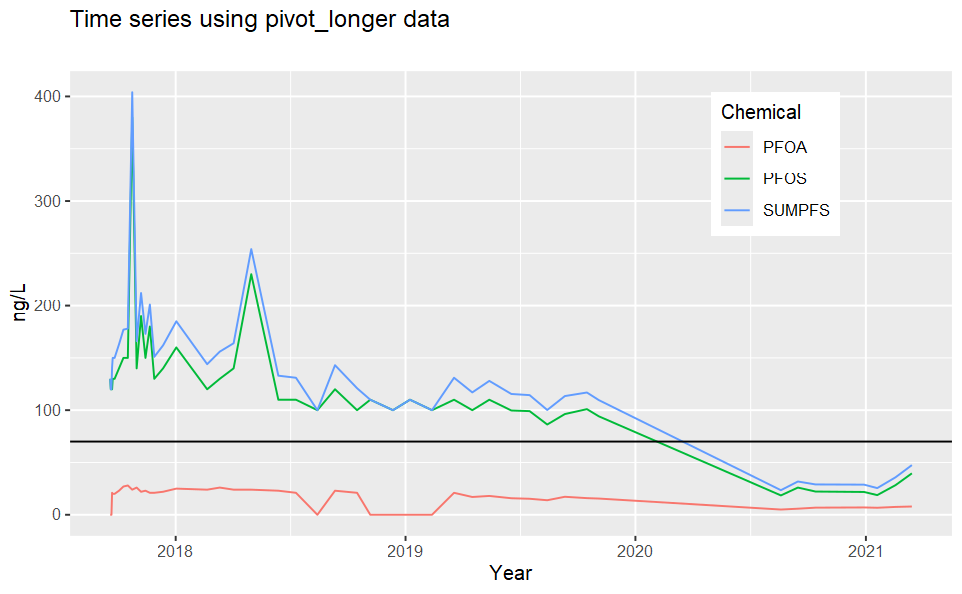

Chapter 5 Data Transformation

The goal of this section is to continue where we started in the earlier
chapter on data abstraction with dplyr to look at the
more transformational functions applied to data in a database, and
tidyr adds other tools like pivot tables.
dplyrtools:- joins:
left_join,right_join,inner_join,full_join,semi_join,anti_join - set operations:
intersect,union,setdiff - binding rows and columns:
bind_cols,bind_rows
- joins:
tidyrtools:- pivot tables:
pivot_longer,pivot_wider
- pivot tables:
The term “data wrangling” has been used for what we’re doing with these tools, and the relevant cheat sheet used to be called that, but now they have names like “Data transformation with dplyr” and “Data tidying with tidyr”, but those could change too. See what’s current at https://www.rstudio.com/resources/cheatsheets/
5.1 Data joins
To bring in variables from another data frame based on
a common join field. There are multiple types of joins. Probably the
most common is left_join since it starts from the data frame (or
sf) you want to continue working with and bring in data from an
additional source. You’ll retain all records of the first data set. For
any non-matches, NA is assigned.
library(tidyverse)
library(igisci)
library(sf)
income <- read_csv(ex("CA/CA_MdInc.csv")) |>
dplyr::select(trID, HHinc2016) |>
mutate(HHinc2016 = as.numeric(HHinc2016),
joinid = str_c("0", trID)) |>
dplyr::select(joinid, HHinc2016)
census <- BayAreaTracts |>
left_join(income, by = c("FIPS" = "joinid")) |>
dplyr::select(FIPS, POP12_SQMI, POP2012, HHinc2016)
head(census |> st_set_geometry(NULL))## FIPS POP12_SQMI POP2012 HHinc2016
## 1 06001400100 1118.797 2976 177417
## 2 06001400200 9130.435 2100 153125
## 3 06001400300 11440.476 4805 85313
## 4 06001400400 14573.077 3789 99539
## 5 06001400500 15582.609 3584 83650
## 6 06001400600 13516.667 1622 61597Other joins are:
right_joinwhere you end up retaining all the rows of the second data set and NA is assigned to non-matchesinner_joinwhere you only retain records for matchesfull_joinwhere records are retained for both sides, and NAs are assigned to non-matches
Right join example We need to join NCDC monthly climate data for all California weather stations to a selection of 82 stations that are in the Sierra.
- The monthly data has 12 rows (1/month) for each station
- The right_join gets all months for all stations, so we weed out the non-Sierra stations by removing NAs from a field only with Sierra station data
sierra <- right_join(sierraStations, CA_ClimateNormals, by="STATION") |>
filter(!is.na(STATION_NA)) |> dplyr::select(-STATION_NA)
head(sierra |> filter(DATE == "01") |>
dplyr::select(NAME, ELEVATION, `MLY-TAVG-NORMAL`), n=10)## # A tibble: 10 × 3
## NAME ELEVATION `MLY-TAVG-NORMAL`
## <chr> <dbl> <dbl>
## 1 GROVELAND 2, CA US 853. 5.6
## 2 CANYON DAM, CA US 1390. 0.2
## 3 KERN RIVER PH 3, CA US 824. 7.6
## 4 DONNER MEMORIAL ST PARK, CA US 1810. -1.9
## 5 BOWMAN DAM, CA US 1641. 3
## 6 BRUSH CREEK RANGER STATION, CA US 1085. NA
## 7 GRANT GROVE, CA US 2012. 1.9
## 8 LEE VINING, CA US 2072. -1.2
## 9 OROVILLE MUNICIPAL AIRPORT, CA US 57.9 7.7
## 10 LEMON COVE, CA US 156. 8.6The exact same thing, however, could be accomplished with an inner_join, and it doesn’t required removing the NAs:
5.2 Set operations
Set operations compare two data frames (or vectors) to handle observations or rows that are the same for each, or not the same. The three set methods are:
dplyr::intersect(x,y)retains rows that appear in both x and ydplyr::union(x,y)retains rows that appear in either or both of x and ydplyr::setdiff(x,y)retains rows that appear in x but not in y
## [1] 1 4 9 16 25 36 49 64 81 100## [1] 0 2 4 6 8 10 12 14 16 18 20 22 24 26 28 30 32 34 36
## [20] 38 40 42 44 46 48 50 52 54 56 58 60 62 64 66 68 70 72 74
## [39] 76 78 80 82 84 86 88 90 92 94 96 98 100## [1] 4 16 36 64 100## [1] 0 1 2 4 6 8 9 10 12 14 16 18 20 22 24 25 26 28 30
## [20] 32 34 36 38 40 42 44 46 48 49 50 52 54 56 58 60 62 64 66
## [39] 68 70 72 74 76 78 80 81 82 84 86 88 90 92 94 96 98 100## [1] 1 9 25 49 815.3 Binding rows and columns
These dplyr functions are similar
to cbind and rbind in base R, but always create data frames. For
instance, cbind usually creates matrices and makes all vectors the
same class. Note that in bind_cols, the order of data in rows must be
the same.
## # A tibble: 6 × 11
## abb name region Population Income Illiteracy `Life Exp` Murder `HS Grad`
## <chr> <chr> <fct> <dbl> <dbl> <dbl> <dbl> <dbl> <dbl>
## 1 AL Alabama South 3615 3624 2.1 69.0 15.1 41.3
## 2 AK Alaska West 365 6315 1.5 69.3 11.3 66.7
## 3 AZ Arizona West 2212 4530 1.8 70.6 7.8 58.1
## 4 AR Arkansas South 2110 3378 1.9 70.7 10.1 39.9
## 5 CA Califor… West 21198 5114 1.1 71.7 10.3 62.6
## 6 CO Colorado West 2541 4884 0.7 72.1 6.8 63.9
## # ℹ 2 more variables: Frost <dbl>, Area <dbl>To compare, note that cbind converts numeric fields to character type
when any other field is character, and character fields are converted to
character integers where there are any repeats, which would require
manipulating them into factors:
states <- as_tibble(cbind(abb=state.abb,
name=state.name,
region=state.region,
division=state.division,
state.x77))
head(states)## # A tibble: 6 × 12
## abb name region division Population Income Illiteracy `Life Exp` Murder
## <chr> <chr> <chr> <chr> <chr> <chr> <chr> <chr> <chr>
## 1 AL Alabama 2 4 3615 3624 2.1 69.05 15.1
## 2 AK Alaska 4 9 365 6315 1.5 69.31 11.3
## 3 AZ Arizona 4 8 2212 4530 1.8 70.55 7.8
## 4 AR Arkansas 2 5 2110 3378 1.9 70.66 10.1
## 5 CA Californ… 4 9 21198 5114 1.1 71.71 10.3
## 6 CO Colorado 4 8 2541 4884 0.7 72.06 6.8
## # ℹ 3 more variables: `HS Grad` <chr>, Frost <chr>, Area <chr>5.4 Pivoting data frames
Pivot tables are a popular tool in Excel, allowing you
to transform your data to be more useful in a particular analysis. A
common need to pivot is 2+ variables with the same data where the
variable name should be a factor. Tidyr has pivot_wider and
pivot_longer.
pivot_widerpivots rows into variables.pivot_longerpivots variables into rows, creating factors.
5.4.1 pivot_longer
In our meadows study cross-section (Davis et al. 2020) created by intersecting
normalized difference vegetation index (NDVI) values from multispectral
drone imagery with surveyed elevation and vegetation types (xeric,
mesic, and hydric), we have fields NDVIgrowing from a July 2019
growing season and NDVIsenescent from a September 2020 dry season, but
would like “growing” and “senescent” to be factors with a single NDVI
variable. This is how we used pivot_longer to accomplish this, using
data from the igisci data package:
XSptsPheno <- XSptsNDVI |>
filter(vegetation != "pine") |> # trees removed
pivot_longer(cols = starts_with("NDVI"),
names_to = "phenology", values_to = "NDVI") |>
mutate(phenology = str_sub(phenology, 5, str_length(phenology)))To see what the reverse would be, we’d use pivot_wider to return to
the original, but note that we’re not writing over our XSptsPheno data
frame.
## # A tibble: 19 × 6
## DistNtoS elevation vegetation geometry NDVIgrowing NDVIsenescent
## <dbl> <dbl> <chr> <chr> <dbl> <dbl>
## 1 0 1510. Artemisia c(718649.456, 4… 0.326 0.140
## 2 16.7 1510. mixed graminoid c(718649.4309, … 0.627 0.259
## 3 28.6 1510. mixed graminoid c(718649.413, 4… 0.686 0.329
## 4 30.5 1510. mixed graminoid c(718649.4101, … 0.668 0.282
## 5 31.1 1510. mixed graminoid c(718649.4092, … 0.655 0.266
## 6 33.4 1510. mixed graminoid c(718649.4058, … 0.617 0.274
## 7 35.6 1510. mixed graminoid c(718649.4025, … 0.623 0.275
## 8 37 1510. mixed graminoid c(718649.4004, … 0.589 0.242
## 9 74 1510. mixed graminoid c(718649.3448, … 0.641 0.325
## 10 101 1510. mixed graminoid c(718649.3042, … 0.558 0.312
## 11 126. 1511. Artemisia c(718649.2672, … 0.391 0.163
## 12 137 1510. mixed graminoid c(718649.25, 43… 0.583 0.272
## 13 149. 1510. Carex c(718649.2317, … 0.736 0.392
## 14 154. 1510. Carex c(718649.224, 4… 0.744 0.424
## 15 175 1511. mixed graminoid c(718649.1929, … 0.455 0.204
## 16 195. 1511. mixed graminoid c(718649.1633, … 0.512 0.237
## 17 197. 1510. mixed graminoid c(718649.1597, … 0.489 0.197
## 18 201. 1511. mixed graminoid c(718649.1544, … 0.533 0.275
## 19 259. 1511. mixed graminoid c(718649.0663, … 0.505 0.193## # A tibble: 38 × 6
## DistNtoS elevation vegetation geometry phenology NDVI
## <dbl> <dbl> <chr> <chr> <chr> <dbl>
## 1 0 1510. Artemisia c(718649.456, 4397466.714) growing 0.326
## 2 0 1510. Artemisia c(718649.456, 4397466.714) senescent 0.140
## 3 16.7 1510. mixed graminoid c(718649.4309, 4397450.07… growing 0.627
## 4 16.7 1510. mixed graminoid c(718649.4309, 4397450.07… senescent 0.259
## 5 28.6 1510. mixed graminoid c(718649.413, 4397438.222) growing 0.686
## 6 28.6 1510. mixed graminoid c(718649.413, 4397438.222) senescent 0.329
## 7 30.5 1510. mixed graminoid c(718649.4101, 4397436.33) growing 0.668
## 8 30.5 1510. mixed graminoid c(718649.4101, 4397436.33) senescent 0.282
## 9 31.1 1510. mixed graminoid c(718649.4092, 4397435.73… growing 0.655
## 10 31.1 1510. mixed graminoid c(718649.4092, 4397435.73… senescent 0.266
## # ℹ 28 more rowsWe’ll use the pivot_longer result (the one we actually assigned to
XSptsPheno) to allow us to create the graph we’re after (Figure
5.1).
XSptsPheno |>
ggplot() +
geom_point(aes(elevation, NDVI, shape=vegetation,
color = phenology), size = 5) +
geom_smooth(aes(elevation, NDVI,
color = phenology), method="lm")
FIGURE 5.1: Color classified by phenology, data created by a pivot
Pivots turn out to be commonly useful. We’ve already seen their use in
the Visualization chapter, such as when we graphed runoff from the
Eucalyptus/Oak study (Thompson et al. 2016), where we used a pivot_longer (Figure
5.2).
eucoakrainfallrunoffTDR |>
pivot_longer(cols = starts_with("runoffL"),
names_to = "tree", values_to = "runoffL") |>
mutate(tree = str_sub(tree, str_length(tree)-2, str_length(tree))) |>
ggplot() + geom_boxplot(aes(site, runoffL)) +
facet_grid(tree ~ .)
FIGURE 5.2: Euc vs oak graphs created using a pivot
Combining a pivot with bind_rows to create a runoff/rainfall scatterplot colored by tree
With a bit more code, we can combine pivoting with binding rows to set up a useful scatter plot (Figure 5.3).
runoffPivot <- eucoakrainfallrunoffTDR |>
pivot_longer(cols = starts_with("runoffL"),
names_to = "tree", values_to = "runoffL") |>
mutate(tree = str_sub(tree, str_length(tree)-2, str_length(tree)),
Date = as.Date(date, "%m/%d/%Y"))
euc <- runoffPivot |>
filter(tree == "euc") |>
mutate(rain_subcanopy = rain_euc,
slope = slope_euc, aspect = aspect_euc,
surface_tension = surface_tension_euc,
runoff_rainfall_ratio = runoff_rainfall_ratio_euc) |>
dplyr::select(site, `site #`, tree, Date, month, rain_mm,
rain_subcanopy, slope, aspect, runoffL,
surface_tension, runoff_rainfall_ratio)
oak <- runoffPivot |>
filter(tree == "oak") |>
mutate(rain_subcanopy = rain_oak,
slope = slope_oak, aspect = aspect_oak,
surface_tension = surface_tension_oak,
runoff_rainfall_ratio = runoff_rainfall_ratio_oak) |>
dplyr::select(site, `site #`, tree, Date, month, rain_mm,
rain_subcanopy, slope, aspect, runoffL,
surface_tension, runoff_rainfall_ratio)
bind_rows(euc, oak) |>
ggplot() +
geom_point(mapping = aes(x = rain_mm, y = runoffL, color = tree)) +
geom_smooth(mapping = aes(x = rain_mm, y= runoffL, color = tree),
method = "lm") +
scale_color_manual(values = c("seagreen4", "orange3"))
FIGURE 5.3: Runoff/rainfall scatterplot colored by tree, created by pivot and binding rows
5.4.2 pivot_wider
The opposite of pivot_longer, pivot_wider is
less commonly used for tidying data, but can be useful for creating
tables of that desired format. An environmental application of
pivot_wider can be found in vignette("pivot") (modified below) for
studying fish detected by automatic monitors, with fish_encounters
data contributed by Johnston and Rudis (n.d.) . This pivot makes it easier to see
fish encounters by station. See Johnston and Rudis (n.d.) and vignette("pivot")
for more information on the dataset and how the pivot provides this
view.
## # A tibble: 209 × 3
## TagID Station value
## <dbl> <chr> <dbl>
## 1 4842 Release 1
## 2 4843 Release 1
## 3 4844 Release 1
## 4 4845 Release 1
## 5 4847 Release 1
## 6 4848 Release 1
## 7 4849 Release 1
## 8 4850 Release 1
## 9 4851 Release 1
## 10 4854 Release 1
## # ℹ 199 more rowsfishEncountersWide <- fish_encounters |>
pivot_wider(names_from = Station, values_from = value, values_fill = 0)
fishEncountersWide## # A tibble: 19 × 12
## TagID Release I80_1 Lisbon Rstr Base_TD BCE BCW BCE2 BCW2 MAE MAW
## <dbl> <dbl> <dbl> <dbl> <dbl> <dbl> <dbl> <dbl> <dbl> <dbl> <dbl> <dbl>
## 1 4842 1 1 1 1 1 1 1 1 1 1 1
## 2 4843 1 1 1 1 1 1 1 1 1 1 1
## 3 4844 1 1 1 1 1 1 1 1 1 1 1
## 4 4845 1 1 1 1 1 0 0 0 0 0 0
## 5 4847 1 1 1 0 0 0 0 0 0 0 0
## 6 4848 1 1 1 1 0 0 0 0 0 0 0
## 7 4849 1 1 0 0 0 0 0 0 0 0 0
## 8 4850 1 1 0 1 1 1 1 0 0 0 0
## 9 4851 1 1 0 0 0 0 0 0 0 0 0
## 10 4854 1 1 0 0 0 0 0 0 0 0 0
## 11 4855 1 1 1 1 1 0 0 0 0 0 0
## 12 4857 1 1 1 1 1 1 1 1 1 0 0
## 13 4858 1 1 1 1 1 1 1 1 1 1 1
## 14 4859 1 1 1 1 1 0 0 0 0 0 0
## 15 4861 1 1 1 1 1 1 1 1 1 1 1
## 16 4862 1 1 1 1 1 1 1 1 1 0 0
## 17 4863 1 1 0 0 0 0 0 0 0 0 0
## 18 4864 1 1 0 0 0 0 0 0 0 0 0
## 19 4865 1 1 1 0 0 0 0 0 0 0 05.5 Combining transformation methods to create a free_y faceted graph
Creating parallel multi-parameter graphs over a time series can be challenging. We need to link the graphs with a common x axis, but we may need to vary the scaling on the y axis, unlike the faceted graph of grouped data we looked at in the visualization chapter. We’ll look at time series in a later chapter, but this is a good time to explore the use of a pivot_longer to set up the data for a graph like this, and at the same time to expand upon our visualization toolkit.
5.5.1 Air pollutant emissions trends (EPA)
The National Emissions Inventory (NEI) program of the US EPA is a detailed estimate of air emissions of criteria and hazardous air pollutants from a wide variety of air emissions sources. The inventory is released every three years based primarily upon data provided by state, local, and tribal air resources agencies for pollution sources they monitor, supplemented by data developed by the US EPA.
Air pollutant data was downloaded from
https://www.epa.gov/air-emissions-inventories/air-pollutant-emissions-trends-data
and provided in the igisci package.
Processing this data to create a free_y faceted graph employs several
data transformation methods we’ve looked at, and some details and tricks
we haven’t covered:
summarize_allgets means of all variables, though since we’re just using the totals, this just causes worksheets with multipleTotalrows to merge into one; they’re actually the same valuepivot_longeris used twice, first to create columns for each pollutant, so the columns can be bound together, then later to create a facet graph where each pollutant becomes a parameter factorbind_colsto combine a series of data frames with each having the same years (1990:2016) when data for all parameters were collected- A fix for dealing data not all being read in as numeric, needed for
an entry error for the NH3 data, was developed by first reading in
the
Source Categorycolumn, then the yearly data values, settingcol_types="numeric", then binding the columns - Using a character string variable to store a pollutant name that can
be passed to a function and used to access a worksheet, a variable,
and part of other variables: see how
pollutantis used for multiple purposes in the function, and how this option of using a character string for a variable name is a handy alternative
library(tidyverse); library(readxl); library(igisci)
dtaPath <- ex("airquality/Pollution by type US 1970 to 2016.xlsx")
YearColumn <- readxl::read_xlsx(dtaPath, sheet = "SO2", skip=2) |>
pivot_longer(cols=`1990`:`2016`, names_to="Year") |>
dplyr::select(Year) |> mutate(Year=as.numeric(Year))
YearCol <- as.data.frame(unique(YearColumn$Year))
names(YearCol) = "Year"
getPollutant <- function(pollutant){
thedata <- readxl::read_xlsx(dtaPath,sheet=pollutant,skip=2,
col_types="numeric") |>
dplyr::select(-`Source Category`)
rowheaders <- readxl::read_xlsx(dtaPath,sheet=pollutant,skip=2) |>
dplyr::select(`Source Category`)
bind_cols(rowheaders,thedata) |>
dplyr::select(`Source Category`,`1990`:`2016`) |>
filter(`Source Category`=="Total") |>
group_by(`Source Category`) |>
summarize_all(list(mean)) |>
pivot_longer(cols=`1990`:`2016`,names_to="Year",values_to=pollutant) |>
dplyr::select(pollutant)
}
SO2 <- getPollutant("SO2")
PM25 <- getPollutant("PM25Primary") |> rename(PM25=PM25Primary)
PM10 <- getPollutant("PM10Primary") |> rename(PM10=PM10Primary)
NOX <- getPollutant("NOX")
CO <- getPollutant("CO")
VOC <- getPollutant("VOC")
NH3 <- getPollutant("NH3")
pollutants <- bind_cols(YearCol,CO,NOX,SO2,PM25,PM10,VOC,NH3)#5.5.1.1 The free_y faceted graph
Processing this data to create a free_y faceted graph
(5.4) makes the second use of the pivot_longer, in
order to essentially use the parameter as a factor. We could have used
color to put these on the same graph, but the free_y method allows
each line to have a separate y axis based on its units, with the year on
the x axis to allow easy comparison of multiple parameters over time.
pollutant_long <- pollutants |>
pivot_longer(cols = CO:NH3, names_to="parameter", values_to="value")
p <- ggplot(data = pollutant_long, aes(x=Year, y=value)) + geom_line()
p + facet_grid(parameter ~ ., scales = "free_y")
FIGURE 5.4: Facet graph of air pollutants in the US, 1990-2016
5.5.2 Flux tower data
While the above graphic comes from summary data, and it’s certainly not big data, when we’re collecting data using an electronic data logger, we can develop quite big datasets. Even data already summarized from sub-second intervals to half hour values can be pretty voluminous so it will be useful to be able to abstract the signal more clearly using further grouped summaries.
We’ll look at this data set in more depth in the time series chapter, but here’s a quick introduction. To look at micrometeorological changes related to phenological changes in vegetation from seasonal hydrologic changes from snowmelt through summer drying, we captured an array of variables at a flux tower in Loney Meadow in the South Yuba River watershed of the northern Sierra during the 2016 season (Figure 5.5).

FIGURE 5.5: Flux tower installed at Loney Meadow, 2016. Photo credit: Darren Blackburn
A spreadsheet of 30-minute summaries from 17 May to 6 September can be found in the igisci extdata folder as “meadows/LoneyMeadow_30minCO2fluxes_Geog604.xls”, and among other parameters includes data on CO2 flux, net radiation (Qnet), air temperature (Tair), and relative humidity (RH). There’s clearly a lot more we can do with this data (see Blackburn et al. (2021)), but we’ll look at this selection of parameters to see how we can use a pivot to create a multi-parameter graph.
First, we’ll read in the data and simplify some of the variables. Since the second row of data contains measurement units, we needed to wrangle the data a bit to capture the variable names then add those back after removing the first two rows:
library(readxl); library(tidyverse); library(lubridate); library(igisci)
vnames <- read_xls(ex("meadows/LoneyMeadow_30minCO2fluxes_Geog604.xls"),
n_max=0) |> names()
vunits <- read_xls(ex("meadows/LoneyMeadow_30minCO2fluxes_Geog604.xls"),
n_max=0, skip=1) |> names()
Loney <- read_xls(ex("meadows/LoneyMeadow_30minCO2fluxes_Geog604.xls"),
skip=2, col_names=vnames) |>
rename(YDay = `Day of Year`, CO2flux = `CO2 Flux`)The time unit we’ll want to use for time series is going to be days, and we can also then look at the data over time, and a group_by summarization by days will give us a generalized picture of changes over the collection period reflecting phenological changes from first exposure after snowmelt through the maximum growth period and through the major senescence period of late summer. We’ll create the data to graph by using a group_by summarize to create a daily picture of a selection of four micrometeorological parameters:
LoneyDaily <- Loney |>
group_by(YDay) |>
summarize(CO2flux = mean(CO2flux),
Qnet = mean(Qnet),
Tair = mean(Tair),
RH = mean(RH))Note that YDay is essentially an integer variable. While
typeof(Loney$YDay)will return"double", there are only integer numeric values, so they will work to define groups – for summary values for each given day. In fact, there’s no requirement that groups defined by a numeric value be an integer; there just need to be multiple instances of that value. In the time series chapter, we’ll group flux-tower micrometeorological values (like temperature) by half-hour periods over the day (0, 0.5, 1.0, 1.5, …, 23.5), with a season of days providing values to summarize by those periods.
Then from this daily data frame, we pivot_longer to store all of the
parameter names in a parameter variable and all parameter values in a
value variable:
LoneyDailyLong <- LoneyDaily |>
pivot_longer(cols = CO2flux:RH,
names_to="parameter",
values_to="value") |>
filter(parameter %in% c("CO2flux", "Qnet", "Tair", "RH"))Now we have what we need to create a multi-parameter graph using facet_grid – note the scales = “free_y” setting to allow each variable’s y axis to correspond to its value range (Figure 5.6).
p <- ggplot(data = LoneyDailyLong, aes(x=YDay, y=value)) +
geom_line()
p + facet_grid(parameter ~ ., scales = "free_y")
FIGURE 5.6: free-y facet graph supported by pivot (note the y axis scaling varies among variables)
The need to create a similar graph from soil CO2 data inspired me years ago to learn how to program Excel. It was otherwise impossible to get Excel to make all the x scales the same, so I learned how to force it with code…
5.6 Exercise: Transformation
by Josh von Nonn (2021)
The impetus behind this exercise came from the movie Dark Waters (https://www.youtube.com/watch?v=RvAOuhyunhY), inspired by a true story of negligent chemical waste disposal by Dupont.
First create a new RStudio project, named GAMA and save this .Rmd file
there, and create a folder GAMA_water_data in the project folder; the
path to the data can then be specifierd as
"GAMA_water_data/gama_pfas_statewide_v2.txt" assuming that the latter
name matches what is unzipped from your download. Change to match the
actual name if it differs.
Then download from the California Water Boards, GAMA groundwater website: https://gamagroundwater.waterboards.ca.gov/gama/datadownload
Then select “Statewide Downloads” then “Statewide PFOS Data” and extract
the zip file into the GAMA_water_data folder. This is a large txt file
so if you open it with notepad it may take some time to load. Notice
that this is a tab-delimited file, so is best read with read.delim() which defaults to tabs.
Note that this data structure is similar to what was discussed in the introductory chapter in how you should use RStudio projects to organize your data, allowing relative paths to your data, such as “GAMA_water_data/gama_pfas_statewide_v2.txt”, which will work wherever you copy your project folder. An absolute path to somewhere on your computer in contrast won’t work for anyone else trying to run your code; absolute paths should only be used for servers that other users have access to and URLs on the web.
Required packages:
- Read in the downloaded file
"gama_pfas_statewide_v2.txt"and call itcal_pfasand have a look at the data set. You can select it from the Environment pane or useview(cal_pfas).
Before we clean up this data, let’s preserve the locations of all the wells. Create a new data frame,
cal_pfas_loc, retaining the well id and geographic coordinate variables (see 3.4.1) from the fields starting withGM, and remove all the duplicate wells (see 3.3). (Hint: usedistinct())Now to trim down the data. Create a new data frame,
cal_pfas_trim; add a newDATEvariable using the associated function (see 3.6) to read this from the GM sample collection date. Also from the GM fields, retain the date variable you just created, plus well id, chemical VVL, and the numerical result variables, and finally sort (see 3.4.7) by the well id.
The resulting data frame should have the following structure:
- Use the method in 5.4.2 to create new columns from the chemical
names and values from the result column and store the new data frame
as
cal_pfas_wide.
Notice the warnings. While we get a lot of warnings in R that are safely ignored (after you’re used to those that are), we need to watch out for things that are going to give us results we don’t want. Some of the wells have multiple samples on the same day so they will be put into a list (see this in the Environment tab). So we’ll want to derive average values for those, so rerun the pivot but include the argumentvalues_fn = mean. This will return only the average of all the samples.
Once the pivot is working correctly, keep the variablesGM_WELL_ID,DATE,PFOS,PFOAand create a new one,SUMPFS, that is the sum ofPFOSandPFOA. See 3.4.1.
The US EPA has established a lifetime Health Advisory Level (HAL) for PFOA and PFOS of 70 ng/L. When both PFOA and PFOS are found in drinking water, the combined concentrations of PFOA and PFOS should be compared with the 70 ng/L HAL. From the GROUNDWATER INFORMATION SHEET for PFOA (website:https://www.waterboards.ca.gov/water_issues/programs/gama/factsheets.html)
For the sake of creating an interesting time series plot, let’s take the data frame you just created, filter data for wells that have a
SUMPFSgreater than 70 and that have more than 10 sampling dates (see 3.4.6; how many well ids do you have?). Start by creating a new data frame-cal_pfas_indexfrom the pivoted data frame. Hint: one way to do this is to first filter, then count, then filter for a sufficient count. See 3.4.2 and 3.4.6. The resulting data frame downloaded in 2021 had 11 observations and 2 variables.Create a new data frame,
cal_pfas_maxto locate the well with the most sampling dates (n). See 3.4.3, where we found the most massive female penguins, for a relevant method.Now let’s pull all the data on that well by joining the max indexed well with
cal_pfas_wide, removen(3.4.1), and call the new data framecal_pfas_join.Create a new data frame,
cal_pfs_longandpivot_longerthecal_pfs_joindata, creating new columns:"Chemical"and"ngl".Plot the well using the wide data from
cal_pfs_join, to create the graph shown here (see 4.4.3.1 and 4.7), plotting the three variables (PFOS,PFOA,SUMPFS) with different colored lines of your choice. Add a horizontal reference line (geom_hline(yintercept = 70)) for the HAL limit at 70. Note that the axis labels have been clarified (see 4.7).

- Plot the well using the long data from
cal_pfs_longusing DATE on the x axis andnglon the y axis. Distinguish the chemicals by setting the line color toChemicalin the aesthetics. As before, add the horizontal reference at 70 and improve the axis labels, but also tweak where the legend goes (see 4.7).

FIGURE 5.7: Goal